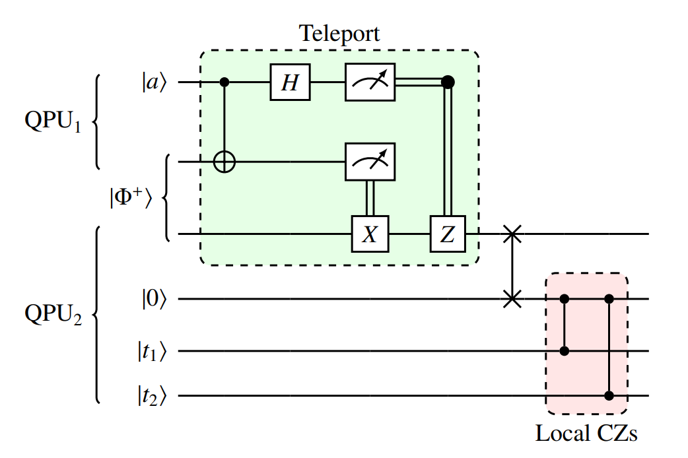

Quantum Communication

Quantum Communications Scheme
This is the one paradigm that does not have a classical counterpart, since it is purely quantum distribution.
In this scheme quantum communication protocols such as teledata and telegate can be use to share quantum entanglement among the states in each QPU involved.
How to deploy
To lauch a set of vQPUs incorporating quantum communications among them, you must use the flag
--quantum-comm when deploying.
qraise -n <num qpus> -t <max time> --quantum-comm [OTHER]
family = qraise(4, <max time>, quantum_comm=True, [OTHER])
The above command line launches vQPUs with all-to-all quantum communications connectivity. For
additional options in the Bash command checkout qraise, and check
qraise for the Python function. Again, it is recomended to use the
--co-located flag (and co_located attribute in Python), as it allows to access the vQPUs
from every node, not just the one the vQPUs are being set up. In this documentation we are going
to consider that this flag is set.
Circuits design
CUNQA allows the implementation of teledata and telegate protocols among circuits. In order to do this, and in a similar manner than with the classical comunnications model, several steps must be followed.
Creating both circuits and adding the desired operations on them:
circuit_1 = CunqaCircuit(num_qubits=2, num_clbits=2, id="circuit_1") circuit_1.h(0) circuit_2 = CunqaCircuit(num_qubits=2, num_clbits=2, id="circuit_2") circuit_2.x(1)
Implementing the quantum communication:
This protocol is similar to the classical communication directive but instead of sending a bit, here we teleport a quantum state. Even though in CUNQA we implement it in a friendlier way, the behind of scene of the protocol looks like the following:
where the state a at the first QPU is teleported to the first qubit of the second QPU. Here we see that a requirement is for the QPUs to share a Bell pair.
At circuit level whithin CUNQA, class methods
qsendandqrecvare designed for this purpose:circuit_1.qsend(qubit=0, sending_circuit="circuit_2") circuit_2.qrecv(qubit=0, recving_circuit="circuit_1")Here the state of qubit
0atcircuit_1is teleported to qubit0atcircuit_2. The origin qubit is then set to state0. Then, we can continue to add instructions to both circuits.This protocol consists in exposing a qubit at one QPU to another for performing multiple-qubits gates across QPUs. The protocol itself consists in the following:

Here the quantum state a at the first QPU is participating in local operations at the other QPU. We notice that a requirement is for the QPUs to share a Bell pair.
Its circuit implementation at CUNQA begins by exposing the control qubit whithin a control context provided by the
exposemethod that returns aQuantumControlContextfor representing the remote qubit and a subcircuit to which the controlled instructions are applied:with circuit_1.expose(qubit=0, target_circuit="circuit_2") as rqubit, subcircuit: subcircuit.cx(rqubit, 1)This way, qubit
0atcircuit_1is participating in thecxtwo-qubit gate together with qubit1atcircuit_2.
{kind=link}
Execution
We obtain the QPU objects associated to the displayed vQPUs through
get_QPUs, same as with the other methods. It is important that those allow
quantum communications, otherwise an error will be raised. When quantum communications are
available, classical-communication directives are also permited at circuits.
For the distribution, function run is used. By providing
the list of circuits and the list of QPU objects we allow their mapping to
the corresponding vQPUs:
qpus_list = get_QPUs(family=family, co_located=True)
distributed_qjobs = run([circuit_1, circuit_2], qpus_list, shots = 1024)
We can call for the results by the gather function, passing the list of
QJob objects:
results = gather(distributed_qjobs)
For quantum communications simulation, the vQPUs deployed actually share a conjunt simulator, therefore the call for results is a blocking call that waits for the whole simulation to be over. Simulation time and output statistics can be accessed by
times_list = [result.time_taken for result in results]
counts_list = [result.counts for result in results]
Basic example
Here we show two examples of implementing the remote construction of a three-qubit entangled state by teledata and telegate. Further examples and use cases are listed in Further examples.
import os, sys # In order to import cunqa, we append to the search path the cunqa installation path. # In CESGA, we install by default on the $HOME path as $HOME/bin is in the PATH variable sys.path.append(os.getenv("HOME")) from cunqa.qpu import get_QPUs, qraise, qdrop, run from cunqa.circuit import CunqaCircuit from cunqa.qjob import gather # 1. QPU deployment family_name = qraise(2, "01:00:00", quantum_comm=True, family_name = "qpus_quantum_comms") qpus = get_QPUs(family = family_name) # 2. Circuit design circuit_1 = CunqaCircuit(2, id="circuit_1") circuit_2 = CunqaCircuit(2, id="circuit_2") circuit_1.h(0) circuit_1.cx(0,1) # -------------- Teledata! ------------ circuit_1.qsend(1, "circuit_2") circuit_2.qrecv(0, "circuit_1") # ------------------------------------- circuit_2.cx(0,1) circuit_1.measure_all() circuit_2.measure_all() # 3. Execution qjobs = run([circuit_1, circuit_2], qpus, shots=1000) results = gather(qjobs) counts_list = [result.counts for result in results] for counts, qpu in zip(counts_list, qpus): print(f"Counts from vQPU {qpu.id}: {counts}") qdrop(family_name)import os, sys # In order to import cunqa, we append to the search path the cunqa installation path. # In CESGA, we install by default on the $HOME path as $HOME/bin is in the PATH variable sys.path.append(os.getenv("HOME")) from cunqa.qpu import get_QPUs, qraise, qdrop, run from cunqa.circuit import CunqaCircuit from cunqa.qjob import gather # 1. QPU deployment family_name = qraise(2, "01:00:00", quantum_comm=True, family_name = "qpus_quantum_comms") qpus = get_QPUs(family = family_name) # 2. Circuit design circuit_1 = CunqaCircuit(2, id="circuit_1") circuit_2 = CunqaCircuit(1, id="circuit_2") circuit_1.h(0) circuit_1.cx(0,1) # -------------------------- Telegate! ------------------------- with circuit_1.expose(1, "circuit_2") as (rqubit, subcircuit): subcircuit.cx(rqubit, 0) # -------------------------------------------------------------- circuit_1.measure_all() circuit_2.measure_all() # 3. Execution qjobs = run([circuit_1, circuit_2], qpus, shots=1000) results = gather(qjobs) counts_list = [result.counts for result in results] for counts, qpu in zip(counts_list, qpus): print(f"Counts from vQPU {qpu.id}: {counts}") qdrop(family_name)